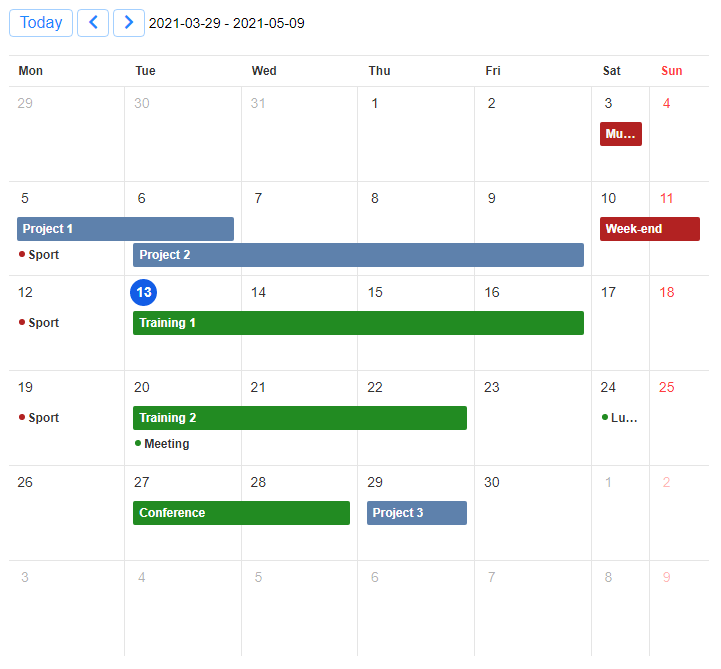

R Htmlwidgets for TOAST UI JavaScript libraries: Grid, Calendar and Chart.
Installation
Install from CRAN with:
install.packages("toastui")Or install the development version from GitHub with:
# install.packages("remotes")
remotes::install_github("dreamRs/toastui")Grid
Interactive tables with data editing, filtering, sorting, and more. See documentation and examples:

Edit mode example:

Calendar
Interactive daily, weekly or monthly calendar. See documentation and examples:
- Monthly view:

- Weekly view:


Development
This package uses packer to manage JavaScript source code and dependencies. If you want to modify it, you’ll need a working installation of Node.js.
After cloning the Git repository, install nodes modules with:
packer::npm_install()Modify code in srcjs/ directory, then run:
packer::bundle_prod() # or packer::bundle_dev()Re-install the package or use pkgload::load_all() to try changes.